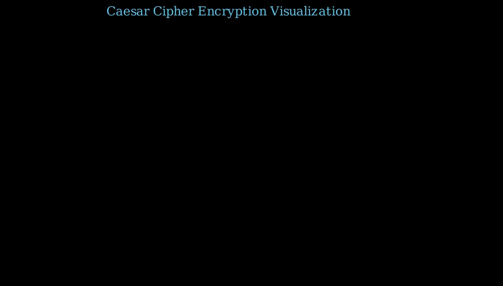
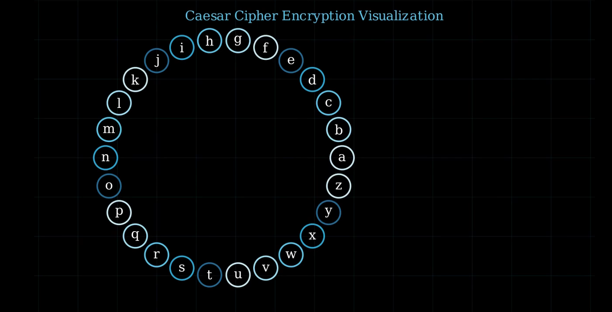
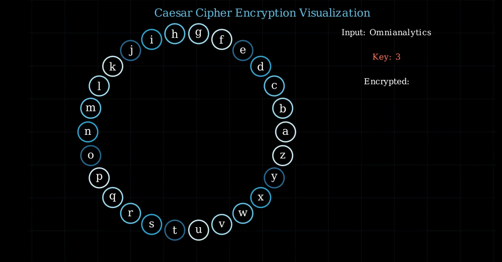
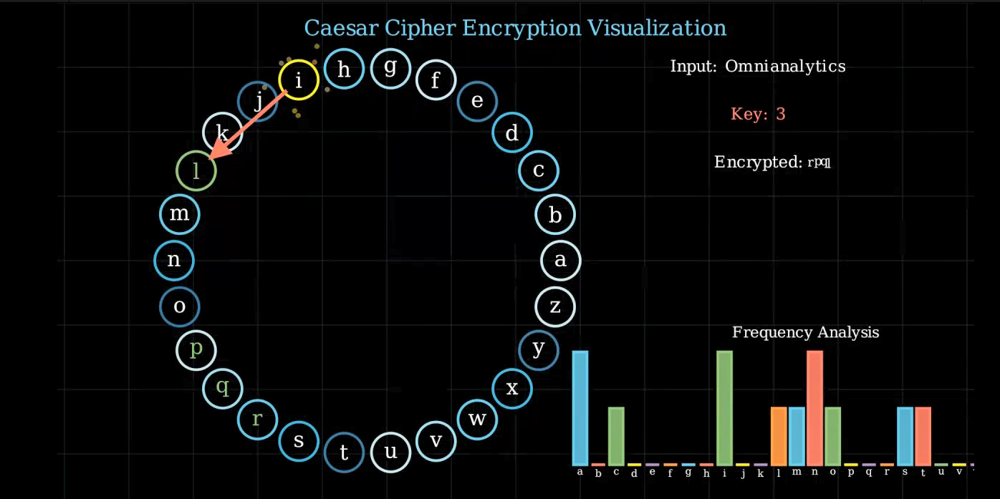
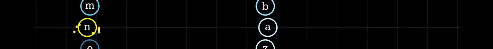
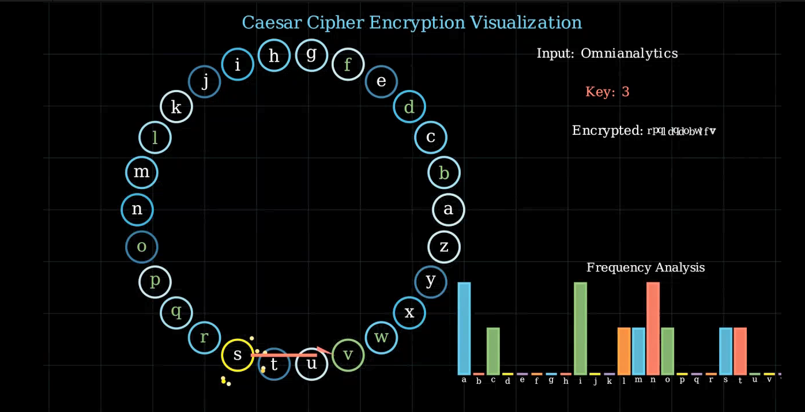
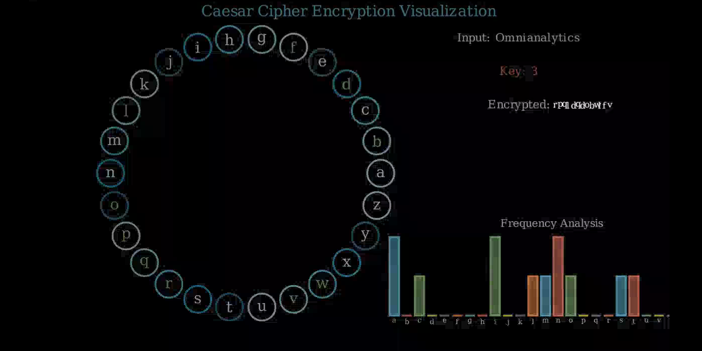

title: “Creating a Caesar Cipher Animation with Manim” format: revealjs Editor: Visual
Introduction
The Caesar cipher is a substitution cipher that shifts letters by a fixed key (e.g., A→D with key=3). While simple for basic encryption, its lack of complexity makes it impractical for modern security. However, it remains valuable for educational purposes, introducing fundamental cryptography concepts. In industry, stronger algorithms (AES, RSA) dominate, but Caesar cipher principles help in understanding encryption basics, data obfuscation, and historical cryptographic evolution.
Presentation Overview & Learning Outcomes This presentation demonstrates a Manim-animated Caesar cipher, visually explaining encryption through letter shifting, frequency analysis, and dynamic effects. Users will learn:
How the cipher works
Visualizing cryptographic concepts
Creating engaging educational animations
Combining programming with mathematical principles for clear explanations.
1. Setting Up the Scene
class EnhancedCaesarAnimation(Scene):
def construct(self):
# Main animation sequence goes here1. Setting Up the Scene
- Defines the animation class.
- Inherits from Manim’s
Sceneclass. - All animation logic will go in the
constructmethod.
2. Creating the Background Grid
def create_background_grid(self):
grid = VGroup()
for i in range(-8, 9):
h_line = Line(
start=LEFT * 8 + UP * i,
end=RIGHT * 8 + UP * i,
stroke_width=0.5,
stroke_opacity=0.3,
color=BLUE_D
)
v_line = Line(
start=LEFT * i + UP * 4,
end=LEFT * i + DOWN * 4,
stroke_width=0.5,
stroke_opacity=0.3,
color=BLUE_D
)
grid.add(h_line, v_line)
return grid2. Creating the Background Grid
- Creates a grid of horizontal and vertical lines.
- Uses
VGroupto group all lines together. - Lines are semi-transparent (opacity = 0.3) and blue (
BLUE_D). 
3. Creating the Alphabet Circle
alphabet = string.ascii_lowercase
radius = 3
num_letters = len(alphabet)
letter_circles = VGroup()
colors = [BLUE_A, BLUE_B, BLUE_C, BLUE_D, BLUE_E]
for i, letter in enumerate(alphabet):
angle = i * TAU / num_letters
position = radius * np.array([np.cos(angle), np.sin(angle), 0])
color = colors[i % len(colors)]
circle = Circle(radius=0.3, color=color, stroke_width=4)
text = Text(letter).scale(0.5)
text.move_to(circle.get_center())
combined = VGroup(circle, text)
combined.move_to(position)
letter_circles.add(combined)3. Creating the Alphabet Circle
- Arranges 26 letters in a circular layout using polar coordinates.
- Each letter gets a colored circle background.
- Uses
TAU(2π) for even distribution around the circle. - Letters and circles are grouped for easy animation.

4. Text Displays
input_text = "Omnianalytics"
key = 3
input_display = Text(f"Input: {input_text}", font_size=18, color=WHITE)
key_display = Text(f"Key: {key}", font_size=18, color=RED)
encrypted_text_display = Text(f"Encrypted: ", font_size=18, color=WHITE)4. Text Displays
- Displays three text objects:
- The input text for encryption.
- The encryption key.
- The (incrementally built) encrypted output.

5. Frequency Histogram:
def create_frequency_histogram(self, text):
freq_dict = {char: text.lower().count(char) for char in string.ascii_lowercase}
max_freq = max(freq_dict.values())
histogram = VGroup()
colors = [BLUE, RED, GREEN, YELLOW, PURPLE, ORANGE]
for i, (char, freq) in enumerate(freq_dict.items()):
height = (freq / max_freq) * 2.5
color = colors[i % len(colors)]
bar = Rectangle(
height=height,
width=0.3,
fill_opacity=0.8,
color=color
).move_to(RIGHT * (i * 0.4 - 3) + UP * (height/2 - 3))
label = Text(char, font_size=16).next_to(bar, DOWN, buff=0.1)
histogram.add(VGroup(bar, label))
return histogram5. Frequency Histogram
- Creates a bar chart showing frequency of each letter in the input text.
- Bars are colored and labeled with their corresponding letter.
- Bar height is normalized so the tallest bar always has the same height.

6. Particle Effects
def create_particle_effect(self, point):
particles = VGroup()
colors = [YELLOW_A, YELLOW_B, YELLOW_C, YELLOW_D]
for _ in range(8):
angle = np.random.uniform(0, TAU)
radius = np.random.uniform(0.3, 0.6)
color = np.random.choice(colors)
particle = Circle(radius=0.02, fill_opacity=1, color=color)
particle.move_to(point)
particles.add(particle)
target_point = point + radius * np.array([np.cos(angle), np.sin(angle), 0])
particle.add_updater(lambda m, dt, target=target_point: m.shift(
(target - m.get_center()) * dt * 2
).set_fill(opacity=m.get_fill_opacity() - dt))
return particles6. Particle Effects
- Creates an explosion effect when a letter is selected.
- Particles move outward from the source and fade away.
- Uses updaters to animate and fade particles smoothly. 
7. Encryption Animation
for i, char in enumerate(input_text):
if char.isalpha():
current_pos = alphabet.index(char.lower())
new_pos = (current_pos + key) % 26
# Highlight source letter
# Create arrow to target letter
# Animate target letter with glow effect
# Update encrypted text display7. Encryption Animation
- For each character in the input:
- Finds its position in the alphabet.
- Shifts by the key (modulo 26).
- Animates:
- Highlight of the source letter.
- Arrow from source to encrypted letter.
- Particle and glow effects.
- Updates the encrypted text display.
8. Glow Effect Animation
glow_effect = Circle(
radius=0.5,
color=GREEN,
fill_opacity=0.4,
stroke_opacity=0.2
).move_to(letter_circles[new_pos].get_center())
self.play(
glow_effect.animate.scale(2).set_opacity(0),
letter_circles[new_pos].animate.scale(1.2).set_color(GREEN),
run_time=1.0
)8. Glow Effect Animation
- Creates a glow effect at the encrypted letter:
- Expands outward (scales up).
- Fades away (opacity to 0).
- Simultaneously scales and colors the target letter.

9. Final Cleanup
all_elements = VGroup(
title, grid, letter_circles,
input_display, key_display,
encrypted_text_display, histogram_group
)
self.play(FadeOut(all_elements, run_time=5))9. Final Cleanup
- Groups all scene elements.
- Fades everything out smoothly at the end.
run_timecontrols the fade-out duration. 
Summary
- Visualizes Caesar cipher encryption step-by-step.
- Shows frequency analysis of input text.
- Uses smooth animations, effects, and clear composition.
- Manim makes it easy to combine math, text, and custom effects for educational animations.